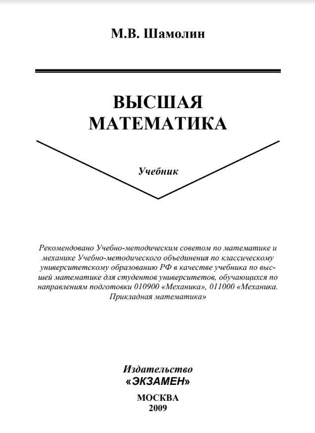
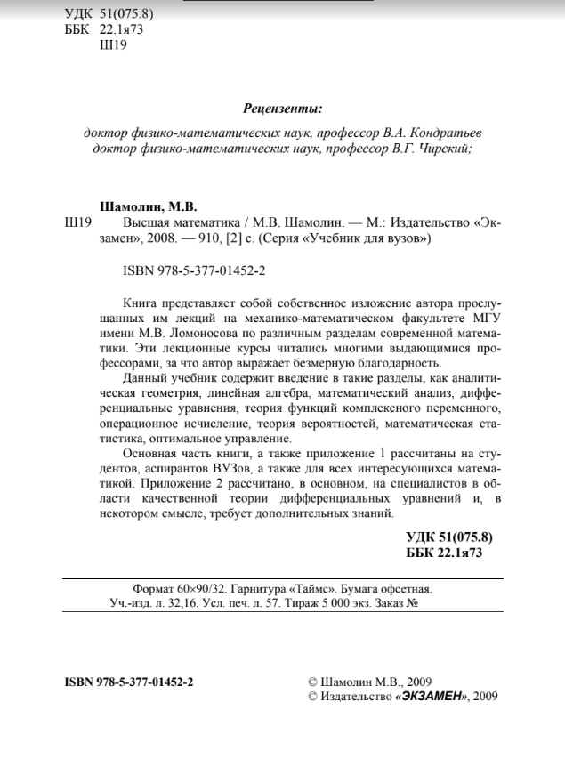

Библиотека
Научно-техническая
Высшая математика
Шамолин М.В. | 2008
Книга представляет собой изложение курса лекции механико-математического факультета МГУ имени М.В.Ломоносова по различным разделам современной математики. Эти лекционные курсы читаются многими выдающимися профессорами, за что автор выражает им безмерную благодарность. Данный учебник содержит введение в такие разделы, как аналитическая геометрия, линейная алгебра, математический анализ, дифференциальные уравнения, теория функций комплексного переменного, операционное исчисление, теория вероятностей, математическая статистика, оптимальное управление. Основная часть книги, а также приложение 1 рассчитаны на студентов, аспирантов ВУЗов, а также на всех интересующихся математикой. Приложение 2 рассчитано, в основном, на специалистов в области качественной теории дифференциальных уравнений и, в некотором смысле, требует дополнительных знаний. Высшая математика. Шамолин М.В. 2008 г.
Ссылка на книгу  